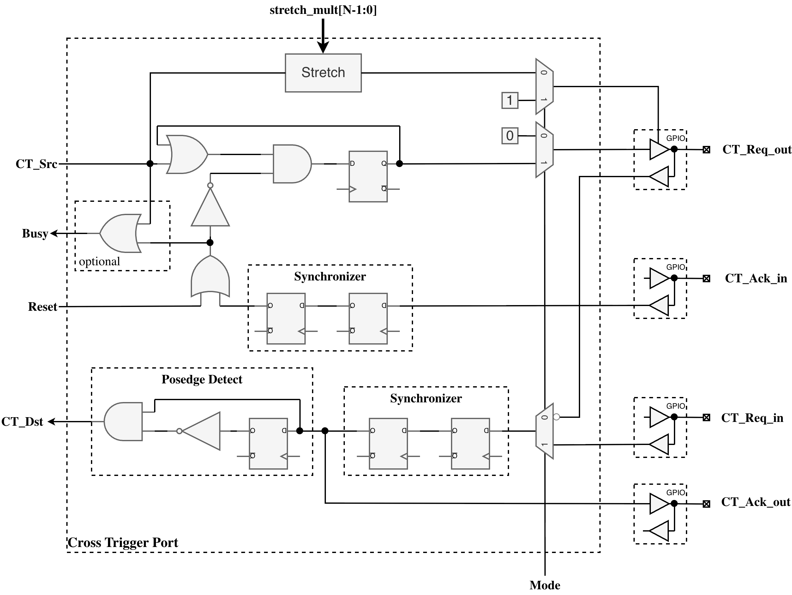
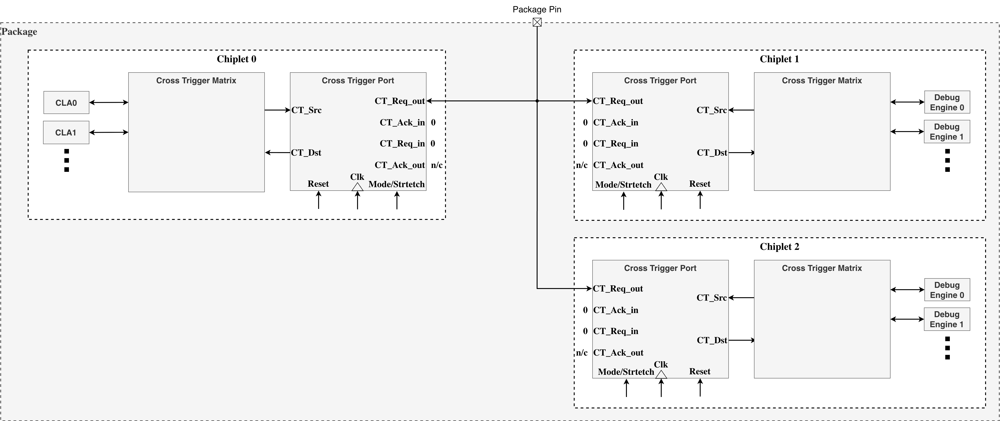
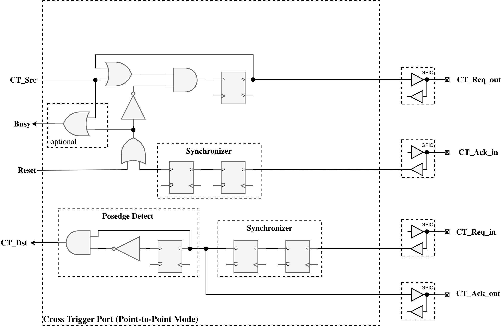
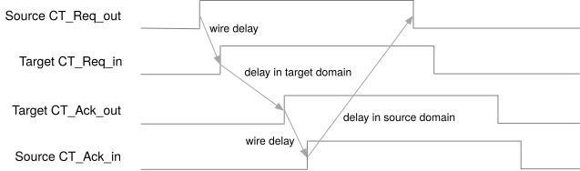

1. Architecture
The Cross Trigger Port architecture separates the register interface from core logic to enable reuse. The full cross_trigger_port module includes CSRs for runtime configuration, while the cross_trigger_port_core module provides the core functionality without registers, allowing instantiation for internal cross-trigger connections without AXI-Lite overhead.

Submodule Hierarchy
The CTP core instantiates four specialized submodules for different aspects of cross-trigger operation:
| Module | Purpose |
|---|---|
|
Implements 2-FF synchronizers for asynchronous GPIO inputs (ct_req_out_din, ct_req_in_din, ct_ack_in_din) from remote chiplets |
|
Extends source pulse duration for Wire-OR mode transmission, with configurable stretch multiplier (0-65535 cycles) |
|
Detects positive edges on synchronized ct_req_in signal for Point-to-Point mode receiver operation |
|
Implements sender and receiver state machines for Point-to-Point mode four-phase handshaking protocol |
Wire-OR Mode
Wire-OR mode is a 1-wire cross trigger signaling scheme compatible with many existing cross triggering implementations. This scheme is very resource efficient, as it only requires a single pin per chiplet connected to the network. However, the performance of the network decreases as the number of connected chiplets increase. Also, the duration of the cross trigger pulse must be pre-arranged across all connected chiplets.
Pulse Stretcher Operation
The pulse stretcher extends single-cycle core-side pulses to multi-cycle GPIO assertions lasting stretch_mult + 1 clock cycles. The module implements a 16-bit countdown counter that loads the stretch multiplier value when a new pulse arrives and decrements to zero. If a new pulse arrives before the counter reaches zero, the counter restarts from the stretch multiplier value, ensuring that rapid successive pulses merge into an extended assertion.
The output stretched_pulse remains asserted as long as the counter is non-zero. This stretched pulse drives the output enable control for the open-drain CT_Req_out GPIO pad, effectively pulling the shared wire low for the configured duration.
Each chiplet has an open-drain I/O connected to a single shared wire. Any connected chiplet may pull this signal low to assert a cross trigger. Depending on the electrical requirements, one or more internal pad pull-ups or external keepers ensure the cross trigger request signal remains high when no cross trigger is asserted. To ensure no connected chiplet misses a cross trigger pulse, all chiplets transmitting a trigger pulse must stretch the pulse a mutually agreed upon length of time.
Note that in wire-OR mode the CT_Req_out signal is connected to an open-drain configured I/O pad. For I/O pads that do have explicit open-drain control, the request data signal should connect to the output-enable control pin of the I/O pad, and the output data signal of the I/O pin should be driven statically low.

Any number of chiplets may have their CT_Req_out pads interconnected as shown in the following example diagram:

Point-to-Point Mode
Point-to-point mode utilizes a four-phase handshaking scheme to synchronize a cross trigger quickly and reliably between two chiplets without pulse stretching. While this scheme is simple and fast, it requires a dedicated CTP for each chiplet-to-chiplet interconnection, and each CTP requires four I/O pads for bi-directional communication, or two pads for unidirectional communication. All output pads are configured for push-pull operation.

Any two chiplets may have their four cross trigger pads cross-coupled as shown in the following example diagram:

On the sender side, the receiver’s CT_Ack_out is connected to the sender’s CT_Ack_in pad. CT_Req_out asserts whenever CT_Src asserts. CT_Req_out will then remain asserted until CT_Ack_in asserts.
On the receiver side, the sender’s CT_Req_out is connected to the receiver’s CT_Req_in pad. On any positive edge of CT_Req_in, the receiver generates a pulse on CT_Dst and asserts CT_Ack_out. Deassertion proceeds in exactly the same sequence.
The timing of the request/acknowledge handshake is shown in the diagram below:

Synchronization and CDC Handling
All GPIO input signals are asynchronous with respect to the CTP system clock and require synchronization to prevent metastability. The ctp_synchronizer module implements three independent 2-FF synchronizer chains using the prim_flop_2sync primitive:
| Signal | Used In Mode | Synchronization Purpose |
|---|---|---|
|
Wire-OR |
Synchronizes open-drain wire state from remote chiplets before edge detection |
|
Point-to-Point |
Synchronizes request signal from remote sender before receiver FSM |
|
Point-to-Point |
Synchronizes acknowledge signal from remote receiver before sender FSM |
After synchronization, an optional inversion is applied if the INVERT configuration bit is set. This allows adaptation to GPIO pads with different polarity requirements. Edge detection and state machine processing occur only on synchronized (and optionally inverted) signals, ensuring all CTP core logic operates on glitch-free inputs.
Handshake State Machines
Point-to-point mode implements two independent state machines within the ctp_handshake_ctrl module, enabling full-duplex cross-triggering. The sender state machine controls outgoing cross-trigger requests, while the receiver state machine handles incoming requests. Both state machines operate synchronously in the system clock domain on synchronized GPIO inputs.
Sender State Machine:
| Current State | Condition | Next State | Output Actions |
|---|---|---|---|
SENDER_IDLE |
|
SENDER_REQ_ASSERTED |
Assert |
SENDER_REQ_ASSERTED |
|
SENDER_WAIT_ACK_DEASSERT |
De-assert |
SENDER_WAIT_ACK_DEASSERT |
|
SENDER_IDLE |
None (remain idle) |
Any state |
|
SENDER_IDLE |
Force |
Receiver State Machine:
| Current State | Condition | Next State | Output Actions |
|---|---|---|---|
RECEIVER_IDLE |
|
RECEIVER_ACK_ASSERTED |
Assert |
RECEIVER_ACK_ASSERTED |
|
RECEIVER_WAIT_REQ_DEASSERT |
De-assert |
RECEIVER_WAIT_REQ_DEASSERT |
|
RECEIVER_IDLE |
None |
RECEIVER_WAIT_REQ_DEASSERT |
|
Remain in state |
Continue waiting |
The ct_dst output pulse is generated for a single clock cycle when the receiver state machine transitions from IDLE to ACK_ASSERTED. The busy signal is asserted whenever either state machine is not in its IDLE state, indicating an active cross-trigger transfer.